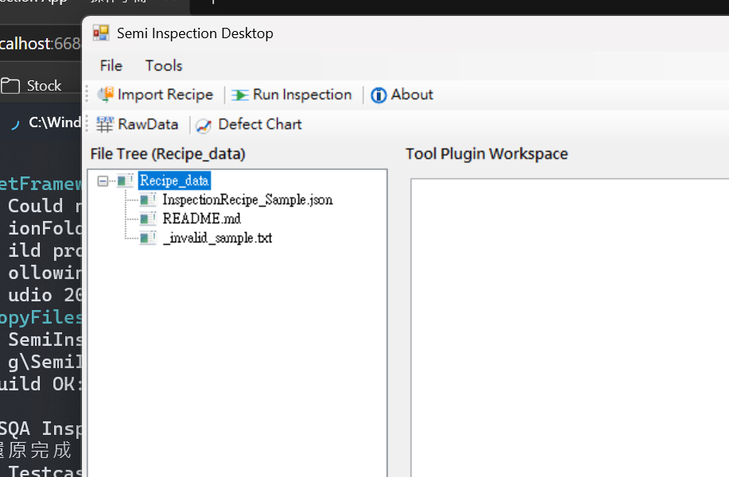
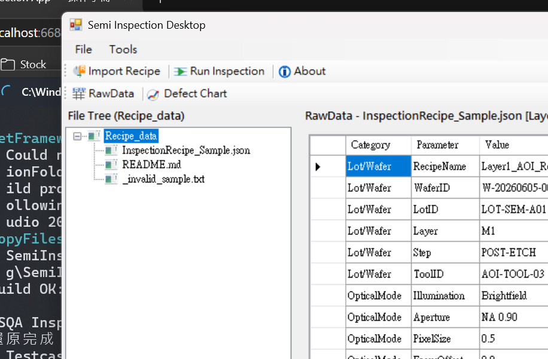
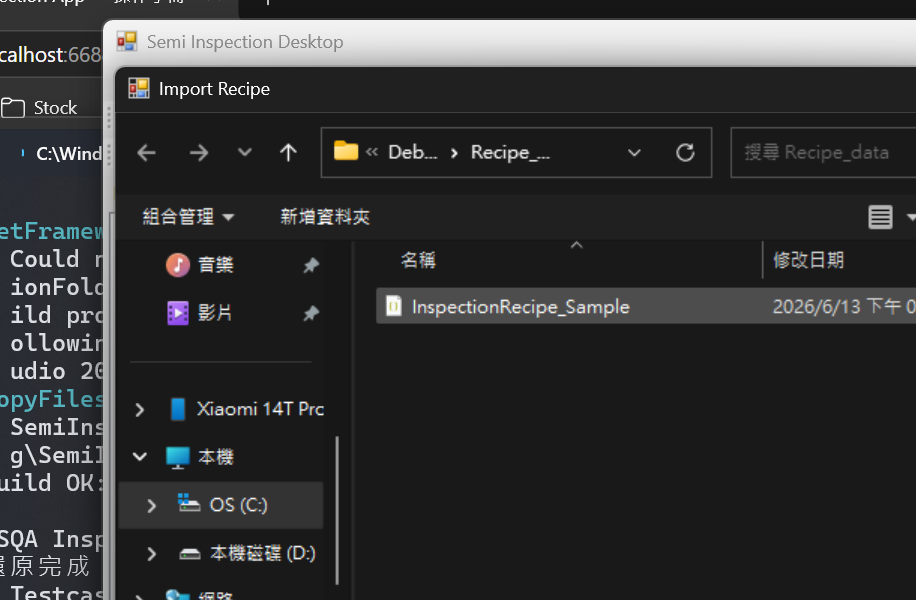

1. FlaUI ↔ 本專案對照
FlaUI 是 .NET 桌面 UI 自動化框架（類似 Web 的 Selenium），底層為 Windows UI Automation。
本專案使用 FlaUI.UIA3 + SpecFlow + NUnit + Page Object。
學完能做什麼： 用 FlaUInspect 讀出控制項屬性、對上本專案 Locator／Page Object，
並能跟著精講 TC（TC02→06→03→01）看懂 Feature → Steps → UI 操作。
規格怎麼變腳本見
第 1 章 ；本頁專注
怎麼操控 WinForms 。
官方／通用概念
本專案落點
Application / Window
Hooks/TestHooks.cs 啟動 SemiInspectionDesktop.exe
AutomationElement
工具列、File Tree、DataGrid、MessageBox、檔案對話框
Condition / Locator
BasePage：ByAutomationId / ByName…
Interact（Click／Keyboard）
MainWindowPage、WorkspacePage、FileDialogPage
FlaUInspect
選單 [15] 或
open_inspector.bat
失敗／步驟截圖
ActionScreenshotHelper →
TestResultReport.html
2. FlaUInspect 逐步練習
只在 Windows 執行。安裝見
tools/README.md 。
啟動 Inspector
選單 [15]，或雙擊
open_inspector.bat
選擇 UIA3
啟動時選 UIA3 （與專案一致）。UIA2 僅作舊系統 fallback，本專案勿混用。
確認 Semi Inspection Desktop 已開
若尚未執行，選單 [4] Start Inspection App。標題應為
Semi Inspection Desktop。

主視窗：工具列（Import Recipe / About / RawData…）＋左側 File Tree（Recipe_data）。
此圖來自 TC01 步驟截圖，也適合作 Inspector 對照。
開啟 Hover Mode
在 FlaUInspect 啟用 Hover（或同等「跟隨滑鼠」）。把滑鼠移到目標控制項，左側樹會高亮該節點。
對照截圖建議： 自行開 Inspector 懸停「Import Recipe」後截一張
（畫面應同時有 App 工具列＋ Inspector 屬性面板）。可放入
docs/assets/flaui/ 之後再補進本頁。
讀出並記錄屬性
在屬性面板記下：
Name（顯示文字，例如按鈕文字）AutomationId（最穩，公司優先）ControlType（Button、Tree、Edit…）ClassName（WinForms 輔助）
必練控制項清單
畫面上的目標
建議記的屬性
本專案誰在用
Import Recipe 按鈕
AutomationId ≈ btnImportRecipe
MainWindowPage（亦可用 Ctrl+I）
About 按鈕
AutomationId ≈ btnToolbar0About
MainWindowPage / MessageBoxPage
RawData 按鈕
AutomationId ≈ btnParameters
MainWindowPage（Ctrl+E）
Defect Chart 按鈕
AutomationId ≈ btnDefectChart
MainWindowPage（Ctrl+D）— 作業 1
File Tree 節點（檔名）
Name 含 InspectionRecipe_Sample.jsonWorkspacePage.DoubleClickTreeItem
Log 區
AutomationId ≈ txtToolLog
WorkspacePage.LogContains
開啟檔案對話框「檔名」欄
AutomationId 1148（系統對話框慣例）
FileDialogPage
常見踩坑
Hover 抓到父容器而不是按鈕 → 再靠近圖示中心，或從樹展開子節點選 Button。
找不到 AutomationId → WinForms 可能只用 Name；本專案 FindWinFormsControl 會兩邊都試。
對話框出現後主視窗被擋住 → Inspector 改選對話框視窗節點再 Hover。
3. Locator 與操作速查
方法
說明
優先級
ByAutomationId最穩定、少受語系影響
★★★★★
ByName顯示文字／Tree 項名
★★★
ByClassName例如 DataGridView
★★
ByControlType類型過濾，通常搭配其他條件
★
公司慣例： 工具列優先試快捷鍵 （如 Ctrl+I Import），失敗再依 AutomationId 點擊。
// 短片段：依 AutomationId 找按鈕並點擊
var button = window.FindFirstDescendant(cf => cf.ByAutomationId("btnImportRecipe"));
button?.Click();
// 等待元素（避免寫死過長 Sleep）
var el = Retry.WhileNull(
() => window.FindFirstDescendant(cf => cf.ByAutomationId("txtToolLog")),
TimeSpan.FromSeconds(10)
).Result;
4. Feature → Steps → PageObject
Inspection_App.feature ← Gherkin：人讀的場景
↓
Inspection_AppSteps.cs ← 對齊 Given/When/Then（編排＋Assert）
↓
PageObjects/*.cs ← 真正的 FlaUI 找元素／點擊／輸入
↓
ActionScreenshotHelper ← 步驟圖寫進 TestResultReport
規範： 不要在 Step Definitions 裡直接 FindFirstDescendant。
UI 操作集中在 Page Object，Steps 只呼叫 Page 方法並做斷言。
5. TC 實戰走讀
建議精讀順序：TC02 → TC06 → TC03 → TC01 。
Feature 原文：
Inspection_App.feature 。
單跑：選單 [2] 輸入例如 TC02。
精講 TC02 — File Tree shows Recipe_data目標： 啟動後驗證主視窗標題、檔案樹可見、Recipe_data 含範例 JSON。
Then the main window title should be "Semi Inspection Desktop"
And the file tree should be visible
And Recipe_data should contain "InspectionRecipe_Sample.json"
對照點：左樹根節點 Recipe_data 與
InspectionRecipe_Sample.json。FlaUI 用 Name／Tree 遍歷驗證。
短片段： Steps 呼叫 Workspace 檢查可見性；完整實作見
WorkspacePage 與附錄。
踩坑：App 未含測試資料時樹是空的 → 先確認
Recipe_data/ 有範例檔，或依賴 TC01／Given「test data is ready」。
精講 TC06 — About dialog目標： 點 About、關閉訊息框（MessageBox）。入門對話框控管。
When I click toolbar "About"
And I close the message dialog
截圖： 報告若跑過 TC06，步驟圖會有 About 彈窗與點 OK。
立刻取得：選單 [2] → TC06 → [6] Open test report。
關鍵頁面： MainWindowPage（開 About）＋
MessageBoxPage（關對話框）。
踩坑：對話框搶焦點失敗時 Enter／找 OK 按鈕會 timeout —
Hooks／DialogHelper 有前景視窗處理，勿在 Step 硬 Sleep。
精講 TC03 — RawData parameter table目標： 點 RawData，確認參數表可見、Log 含 "RawData"。
When I click toolbar "RawData"
Then the data table should be visible
And the log should contain "RawData"

右側 RawData 表格（Category / Parameter / Value）。
斷言常查表格可見＋ txtToolLog 文字。
// Steps 短片段
Main.ClickToolbar("RawData");
ClassicAssert.IsTrue(Workspace.IsGridVisible());
踩坑：未載入任何 Recipe 時表格可能空白但仍「可見」—
與 TC08／TC09 負面案例區分清楚。
精講 TC01 — Import Recipe to Recipe_data目標： Import Recipe → 檔案對話框選 JSON → 切 RawData →
驗證樹／表格參數／Log。Feature 使用 Scenario Outline + Examples（DDT） 。
When I click toolbar "Import Recipe"
And I select file "<recipe_file>" in the file dialog
And I click toolbar "RawData"
Then Recipe_data should contain "<recipe_file>"
And the RawData parameter table should contain "<expected_parameter>"

檔案對話框標題「Import Recipe」。Page Object 找檔名欄（AutomationId
1148）輸入完整路徑後確認開啟。
匯入成功後：可驗證例如 Layer1_AOI_Recipe_v1、
W-20260605-001、Brightfield（Examples 列）。
// FileDialog 概念短片段
var path = Path.Combine(ConfigHelper.GetRecipeDataDirectory(), fileName);
FileDialog.OpenFile(path);
踩坑：對話框未前景、路徑含空格、或選到
_invalid_sample.txt（那是 TC07）。優先看報告步驟圖對照哪一步斷掉。
其餘 TC（短卡）
TC05 — 雙擊檔案樹開啟 Recipe（★★）
WorkspacePage.DoubleClickTreeItem；Name 模糊比對。
若表格未出可再點 RawData 當 fallback。
TC04 / TC10 — Defect Chart／Run Inspection（★★★）
多步驟工具列＋ Log assert（"Defect Chart" / "Run Inspection"）。
快捷鍵 Ctrl+D / Ctrl+R。
TC07–TC09 — 負面案例（★★）
TC07 無效副檔名；TC08 無資料繪圖；TC09 開不存在檔。重點：主視窗仍存活、錯誤可關閉、檔案未被誤拷貝。
6. 報告截圖怎麼用
點擊／場景結束會由 ActionScreenshotHelper 擷圖並寫入報告（可設定於 App.config）。
開啟：選單 [6] →
TestResultReport.html
（可點縮圖放大）。
本頁教材圖來自報告步驟截圖，整理於 docs/assets/flaui/。
重新產生：跑對應 TC 後從報告另存，或覆寫同名 PNG。
讀報告細節見 第 5 章 。
7. 練習作業與反模式
用 FlaUInspect 找出 Defect Chart 的 AutomationId，對照上表是否為
btnDefectChart。
選單 [2] 只跑 TC06，打開報告比對 About／關閉步驟圖。
（進階）故意改錯一句 Then 文字再跑，觀察失敗步驟的截圖差異，改回後確認綠燈。
反模式（不要做）
在 Step 直接寫大量 FlaUI Find／Click
過長 Thread.Sleep 取代 Retry／輪詢等待
忽略 null、寫死本機絕對路徑
Locator 一開始就用 ControlType 掃全樹